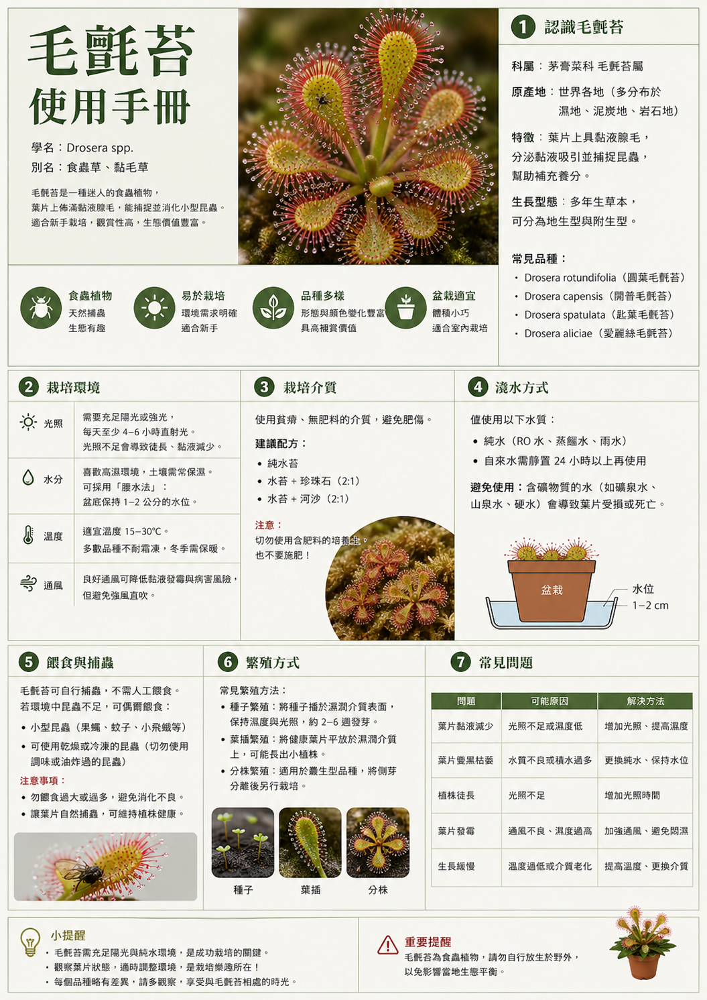
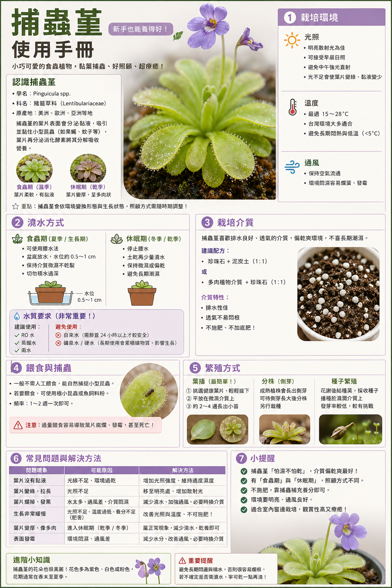
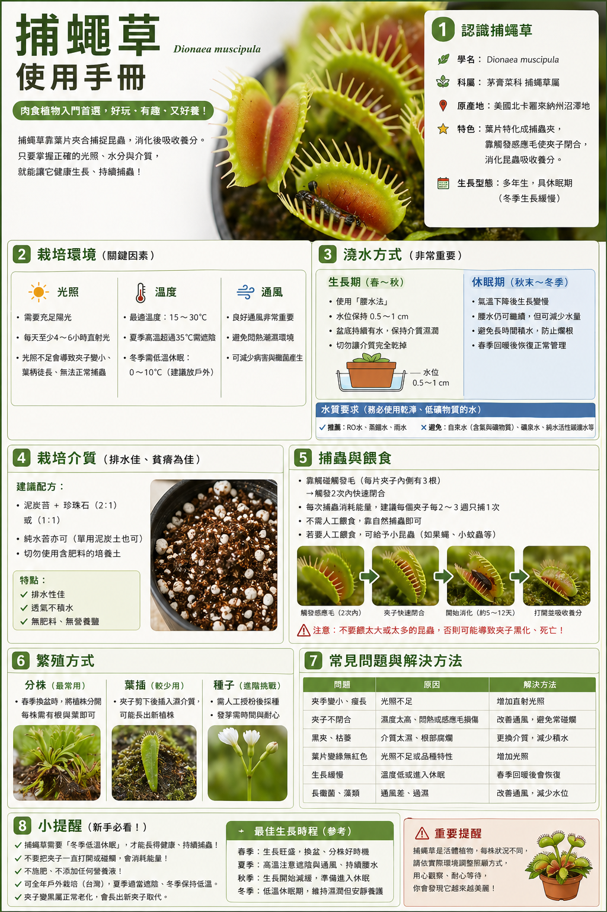
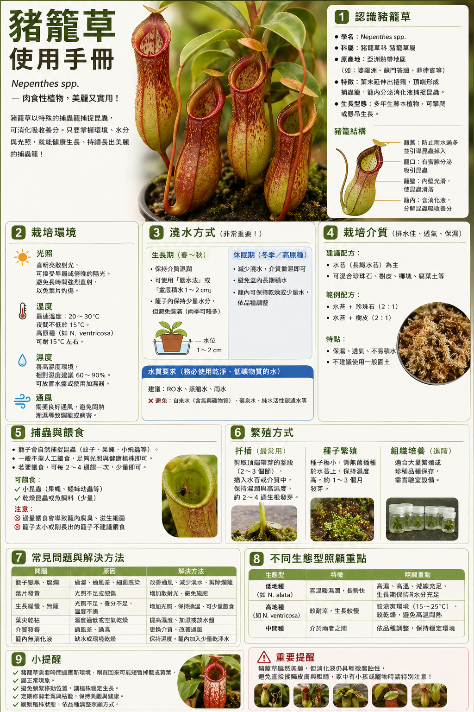

四種食蟲植物總覽
點選任一植物卡片，即可進入詳細照顧頁面。所有食蟲植物都需要乾淨的水、貧瘠的介質、不施肥、充足光線。
💡 點擊卡片翻轉查看照顧重點，再按「查看詳細」進入完整頁面

💧
毛氈苔
Drosera spp. ｜ 難度 ★★
點擊翻轉查看照顧重點 ↩
💧 毛氈苔照顧重點
明亮散射光到半日照
腰水法，盆底保持 1cm 乾淨水
水苔或泥炭土＋珍珠石
有露珠 = 狀態良好
不施肥、不用自來水

🟣
捕蟲堇
Pinguicula spp. ｜ 難度 ★★～★★★
點擊翻轉查看照顧重點 ↩
🟣 捕蟲堇照顧重點
明亮散射光，避開夏季烈日
乾濕交替，表面稍乾再補水
顆粒土、鹿沼土、珍珠石混合
通風非常重要！
不可長期腰水、不施肥

🪤
捕蠅草
Dionaea muscipula ｜ 難度 ★★★
點擊翻轉查看照顧重點 ↩
🪤 捕蠅草照顧重點
強光，半日照到全日照最好
生長季腰水；冬眠期微濕即可
泥炭土＋珍珠石或純水苔
冬季必須休眠，葉小是正常的
不玩夾子、不餵肉類、不施肥

🏺
豬籠草
Nepenthes spp. ｜ 難度 ★★★
點擊翻轉查看照顧重點 ↩
🏺 豬籠草照顧重點
明亮散射光，避免烈日直曬
介質保濕，但不積水
高濕度＋良好通風並重
水苔＋珍珠石＋樹皮疏鬆介質
不積水、不施肥、不塞滿食物
📊 四種植物快速比較表
| 植物 | 難度 | 光照 | 水分管理 | 介質 | 餵食 | 特別注意 |
|---|---|---|---|---|---|---|
| 💧 毛氈苔 | ★★ | 明亮散射光～半日照 | 可腰水，保持濕潤 | 水苔、泥炭+珍珠石 | 不必刻意餵 | 有露珠才是好狀態 |
| 🟣 捕蟲堇 | ★★～★★★ | 明亮散射光，避烈日 | 不宜長期泡濕 | 顆粒介質、水苔混合 | 不必餵 | 怕悶濕，通風很重要 |
| 🪤 捕蠅草 | ★★★ | 強光，日照越足越好 | 生長季可腰水 | 泥炭+珍珠石或水苔 | 偶爾餵小活蟲 | 需要冬季休眠 |
| 🏺 豬籠草 | ★★★ | 明亮散射光，避強曬 | 保濕但不積水 | 水苔+樹皮+珍珠石 | 通常不用餵 | 喜濕度與通風並重 |
⚡ 四種共同黃金原則
💧
水要乾淨
雨水最佳，蒸餾水次之。避免長期使用自來水，礦物質會累積傷根。
🪨
介質要貧瘠
禁用培養土、有機肥土。選水苔、珍珠石、泥炭土等低養分介質。
🚫
不要施肥
捕蟲就是補充養分的方式。高濃度肥料會傷害根系，嚴重可致死。
☀️
光線要足
光不足容易徒長、顏色差、捕蟲效率低。依品種給予適合的光照強度。
🔬 模擬：露珠黏捕動畫（滑鼠移入查看）
✨ 亮晶晶的露珠 = 健康的毛氈苔！沒有露珠代表狀態需要改善。
🩺 健康狀態判斷
葉片有亮晶晶露珠狀態良好，繼續保持！
沒有露珠光不足、空氣太乾、根部不穩，或剛換盆應激反應
葉片徒長光照不足，植株為了追光而長高
葉片變黑腐爛悶濕、通風不足、光線驟變，或老葉正常代謝
❌ 常見錯誤
✗
用自來水長期澆水礦物質累積，葉尖焦枯，介質鹽化
✗
放在光線不足的室內角落葉片徒長，露珠消失，捕蟲效率大幅下降
✗
大量餵昆蟲消化不完，容易發霉，造成植株壓力
✗
使用培養土或施肥根系受傷，植株迅速死亡
🔬 科展觀察建議：毛氈苔很適合做「不同光照對黏液量與捕蟲效率影響」的觀察實驗。建議統一不餵食或每週定量，避免發霉影響實驗結果。
🌿 推薦入門品種：好望角毛氈苔（D. capensis）、匙葉毛氈苔（D. spathulata）── 適應力強、好養，露珠豐盈。
✨ 葉面黏液模擬動畫
葉面覆蓋著微小黏液腺，會黏住果蠅、蕈蚋等小昆蟲 🪲
🩺 健康狀態判斷
葉片挺立、表面閃亮黏液正常分泌，狀態良好
葉片軟化、透明太濕或通風不足，需改善環境
基部腐爛悶濕導致，需立即移除腐敗組織並改善通風
夏季葉片縮小多數墨西哥種夏季會形成多肉葉（半休眠），屬正常現象
❌ 常見錯誤
✗
長期深腰水根部缺氧、腐爛，捕蟲堇不適合和毛氈苔一樣的泡水法
✗
夏季烈日直曬容易曬傷，中午需遮光
✗
放在密閉空間通風不足是最常見的死亡原因
✗
介質太有機質用一般培養土容易爛根，需用排水佳的顆粒介質
📍 適合放置位置：窗邊明亮處、有遮雨的陽台、植物燈下都適合。夏季中午強烈直射光要遮光，東向陽台是理想選擇。
🌸 繁殖方式：葉插非常容易成功！取一片健康葉片插入乾淨水苔，保持微濕通風，數週後即可看到新芽。
🪤 互動動畫：滑鼠移到夾子上觸發關閉！
● ● 觸毛
● ● 觸毛
← 移入此區域
觸毛被碰觸兩次（約 20 秒內），夾子才會關閉。這是防止誤夾雨滴的機制！
❌ 最常見致命錯誤
✗
一直玩夾子、反覆觸發每次關閉消耗大量能量，夾子容易枯掉，全株衰弱
✗
餵火腿、魚飼料、乾燥紅蟲容易腐爛發霉，傷害植株。只能餵小活蟲
✗
光線不足夾子變小、葉柄徒長、顏色淡綠，捕蟲能力大降
✗
不讓它冬眠長期無休眠期，植株逐漸衰弱，壽命縮短
✗
用肥土種植根系直接受傷，植株快速死亡
❄️ 冬眠怎麼判斷與應對
冬天夾子變小、長得慢正常的冬眠前兆，無需擔心
部分葉片變黑休眠期代謝，不代表死亡，可輕輕移除枯葉
正確做法減少水量，保持介質微濕，給予較低溫（不需冰箱），等春天自然甦醒
春天甦醒氣溫回升後，新葉開始生長，夾子越來越大，恢復正常腰水
台灣低海拔平地溫差不夠大，在南部可能不容易完全休眠，可將植株移到較涼爽位置輔助。
🍽️ 餵食指南：偶爾餵小蒼蠅、小蟋蟀、小螞蟻即可（每次餵 1～2 個夾子，每月 1～2 次）。不餵也沒關係，只要光照足夠，植株一樣健康。
🏺 豬籠草捕蟲籠動畫
捕蟲籠擺動
昆蟲被籠口蜜腺吸引，爬入籠內
籠內有消化液，昆蟲落入後被溶解
籠蓋不會關閉，僅防止雨水稀釋
不長籠的主因：濕度不足、光不夠
🏺 不長籠的原因排查
葉正常但不長籠濕度不足（最常見原因）、光線不足、剛移植環境應激
籠子乾掉、萎縮空氣太乾、日照太強導致蒸散過快
葉片焦黃或焦邊曬傷、介質鹽分累積、根部受損
新葉越來越小光線不足或根系問題，需改善環境
❌ 常見錯誤
✗
把食物塞滿籠子過多食物在高溫下腐爛，產生異味甚至傷害植株
✗
盆底長期泡水和前三種不同！豬籠草根部需要空氣，積水會爛根
✗
放在密閉、潮濕空間高濕但無通風容易發霉爛葉，需確保空氣流動
✗
向籠內倒肥料嚴重傷害植株，禁止！
🏠 RHS 建議：熱帶豬籠草適合室內明亮位置，常以吊盆栽培展示垂掛的捕蟲籠。台灣東向陽台或有頂遮的半戶外空間是絕佳選擇。
📋 共同照顧原則
無論哪種食蟲植物，以下原則都適用。RHS 明確指出，多數食蟲植物來自低養分環境，需要乾淨的水和貧瘠的介質。
💧 水源選擇
⭐ 最佳
雨水天然低礦物質，最接近原生環境水源
✅ 很適合
蒸餾水完全去除礦物質，RHS 首要推薦替代品
✅ 很適合
RO 逆滲透水家用濾水器可提供，效果接近蒸餾水
⚠️ 短期可
冷開水短期應急可用，但礦物質仍有殘留，不建議長期
❌ 不建議
一般自來水氯、鈣、鎂等礦物質累積，長期使用葉尖焦枯、介質鹽化
🪨 介質選擇指南
🚫 絕對禁止：一般培養土、田土、有機肥土、任何含肥料的土壤。這些土壤養分過高，會直接燒傷根系。
水苔（Sphagnum moss）
偏酸、無肥分、保水性佳。適合：毛氈苔、豬籠草、部分捕蟲堇
泥炭土＋珍珠石（1:1）
經典配方，透氣保水兼顧。適合：捕蠅草、毛氈苔
水苔＋珍珠石＋樹皮
疏鬆透氣，適合根系較大的植物。適合：豬籠草
顆粒土、鹿沼土、珍珠石
排水性佳，適合怕濕的植物。適合：捕蟲堇
🚫 為什麼不能施肥？
🌿
原生環境超貧瘠
食蟲植物生長在沼澤、岩壁等極度缺乏養分的地方，演化出捕蟲來補充氮、磷
💀
根系無法耐高肥
根系不適合吸收高濃度肥料，施肥就像「燙傷」根部，輕則葉片焦黃，重則死亡
🎯
捕蟲才是正解
只需確保環境正確（光、水、介質），它們自然會捕蟲補充所需養分
🍽️ 餵食參考指南
| 植物 | 可以餵什麼 | 絕對不要餵 | 建議頻率 |
|---|---|---|---|
| 💧 毛氈苔 | 小果蠅、小蚊蟲、蕈蚋 | 大蟲、肉類食品 | 不必餵，偶爾 1 隻即可 |
| 🟣 捕蟲堇 | 果蠅、蕈蚋、小白蛾 | 大型昆蟲（葉面無法消化） | 不必餵 |
| 🪤 捕蠅草 | 小蒼蠅、小蟋蟀、小螞蟻（要活的） | 火腿、魚飼料、乾燥紅蟲過量、大蟲 | 每月 1～2 次，每次 1 個夾子 |
| 🏺 豬籠草 | 小昆蟲（少量放入籠內） | 塞滿食物、倒肥料、倒油脂類 | 不必餵，有蟲自然進入 |
🔬 科展控制建議：若為控制實驗變因，建議統一「不餵食」或統一每週餵相同數量小型昆蟲，避免各組攝食量不同影響結果，同時注意防霉。
🇹🇼 台灣環境擺放指南
台灣農業知識入口網指出，毛氈苔與捕蠅草較需充足日照；豬籠草較適合半日照或強散射光的陽台環境。
🔴 南向陽台
日照最強，全天日照充足
捕蠅草── 最愛，光越強越健壯
毛氈苔── 適合，可展現鮮豔顏色
豬籠草── 夏季需遮光，避免曬傷
捕蟲堇── 中午需遮光，否則曬傷
🟢 東向陽台
早晨柔和日照，下午遮蔭，入門首選
毛氈苔── 非常適合，最推薦
捕蟲堇── 非常適合，早晨柔光理想
豬籠草── 很好，散射光充足
捕蠅草── 可以，但光可能稍嫌不足
🟠 西曬陽台
下午強光高溫，需特別注意
豬籠草── 下午需遮光，防曬傷
捕蟲堇── 需遮光，下午高溫危險
毛氈苔── 可以，但下午高溫要注意
捕蠅草── 可以，但高溫季節要留意
🔵 室內窗邊
光線通常不足，需補光
捕蟲堇── 相對適應，靠窗或補光
豬籠草── 需植物燈補光
捕蠅草── 光線通常不夠，不建議
毛氈苔── 需強力植物燈補光
🏫 教室展示建議
捕蟲堇── 耐陰性較好，適合靠窗或補光展示
小型豬籠草── 視覺吸引力強，靠窗或燈下均可
毛氈苔── 需靠近窗戶，光不足露珠消失
捕蠅草── 室內光線通常不足，容易徒長
💡 補光建議：若教室光線不足，使用全光譜植物燈（5000K以上，每天照 12～14 小時）可有效彌補。距植物 20～40cm 效果最佳。
⭐ 推薦入門組合
🥇
最好養
好望角毛氈苔
匙葉毛氈苔
匙葉毛氈苔
👁️
最容易觀察捕蟲
毛氈苔
捕蟲堇
捕蟲堇
🤩
最吸引學生
捕蠅草
豬籠草
豬籠草
🏫
最適合教室展示
捕蟲堇
小型豬籠草
小型豬籠草
🔬
最適合科展實驗
毛氈苔
捕蠅草
捕蠅草
🌿
最適合陽台長期栽培
毛氈苔
豬籠草
豬籠草
🎵 照顧口訣
簡單記住這四句口訣，就能掌握每種植物的核心照顧要點！
💧
毛氈苔
濕一點、亮一點
看露珠！✨
露珠亮 → 狀態棒
沒露珠 → 找原因
沒露珠 → 找原因
🟣
捕蟲堇
亮一點、乾濕交替
怕悶爛！💨
通風第一
不能長期泡水
不能長期泡水
🪤
捕蠅草
曬多一點、水乾淨
冬天要睡覺！❄️
強光是關鍵
冬眠不可少
冬眠不可少
🏺
豬籠草
亮散光、高濕度
通風好、不泡水！🌀
濕度＋通風並重
不積水是重點
不積水是重點
⚡ 終極口訣（四種通用）
水要乾淨 💧 ｜ 土要貧瘠 🪨
不要施肥 🚫 ｜ 光線要足 ☀️
不要施肥 🚫 ｜ 光線要足 ☀️
做到這四點，食蟲植物就能健康生長！
🛠️ 互動工具
三種互動工具幫助你選擇植物、診斷問題、掌握照顧進度。
🏠 第 1 題：你的種植空間是哪種？
🌿 第 2 題：你的種植經驗？
⏰ 第 3 題：你每週能花多少時間照顧？
第一步：選擇你的植物
本週完成進度0 / 0
✓
補充腰水（確認盆底有 0.5～1cm 乾淨水）
每天✓
觀察露珠狀態（有露珠 = 健康）
每天✓
檢查光照是否足夠（窗邊或補光燈）
每週✓
移除枯黃老葉
每週✓
確認介質沒有發霉（若有，改善通風）
每週✓
補充雨水或蒸餾水庫存
每週✓
檢查盆底有無積水發臭（需換水）
每月✓
觀察是否有新葉生長（生長正常則繼續）
每月✓
觀察葉面黏液是否正常分泌
每天✓
確認通風良好（非常重要！）
每天✓
檢查介質表面，稍乾後再補水（乾濕交替）
每週✓
檢查是否有悶濕跡象（葉片軟透明）
每週✓
確認光照（明亮散射光，夏日中午遮光）
每週✓
移除腐爛葉片，防止蔓延
每週✓
補充雨水或蒸餾水
每月✓
夏季觀察是否進入半休眠（葉片縮小屬正常）
每月✓
確認光照是否充足（日照不足夾子變小）
每天✓
生長季：檢查腰水（保持 1cm 乾淨水）
每天✓
避免觸碰夾子（不要人為觸發！）
每天✓
觀察夾子顏色（紅色 = 光照充足）
每週✓
移除黑掉的枯夾和老葉
每週✓
確認介質沒有發霉
每週✓
冬季：減少腰水，保持介質微濕即可
冬季✓
冬季：移到較涼爽位置輔助休眠
冬季✓
觀察新葉是否有形成籠子的捲鬚
每天✓
確認通風良好（高濕 + 通風並重）
每天✓
補水（介質保持濕潤但盆底不積水）
每週✓
噴霧或增濕（濕度不足是不長籠主因）
每週✓
確認光照（明亮散射光，夏季遮強光）
每週✓
移除枯黃老葉和乾掉的籠子
每週✓
補充雨水或蒸餾水
每月✓
檢查根系是否積水（若有需改善排水）
每月點選季節，查看每種植物的照顧重點
調整你的環境條件，即時查看每種植物的適合度
拖動滑桿設定你的種植環境
各植物適合度評估
💧 毛氈苔
🟣 捕蟲堇
🪤 捕蠅草
🏺 豬籠草
點選水源，看植物的反應！
不同的水對食蟲植物影響大不同
🌿
毛氈苔
🌿
捕蟲堇
🌿
捕蠅草
🌿
豬籠草
📔 植物觀察日記（儲存於本機）
今天狀態心情
😄
🙂
😐
😟
😰
🌸
🌱
💧
過去記錄
還沒有任何記錄，寫下第一筆吧！
🧠 食蟲植物知識測驗
共 10 題，測試你對四種食蟲植物的了解！每題點選答案後立即顯示對錯，全部作答後按「計算成績」查看結果。